Chapter 9 CAPÍTULO N° 7 - Análisis multivariado
9.1 Objetivos de este capítulo
Vea ejemplos de matrices que surgen en el estudio de datos biológicos.
Realice la reducción de dimensiones para comprender las correlaciones entre las variables.
Preprocesar, volver a escalar y centrar los datos antes de iniciar un análisis multivariable.
Construya nuevas variables, llamadas componentes principales (PC), que sean más útiles que las medidas originales.
Vea lo que está “bajo el capó” de PCA: la descomposición de valores singulares de una matriz.
Visualiza lo que logra esta descomposición y aprende a elegir el número de componentes principales.
Realice un análisis PCA completo de principio a fin.
El factor del proyecto covaria en el mapa PCA para permitir una interpretación más útil de los resultados.
9.2 ¿Qué son los datos? Matrices y su motivación.
Se tienen un conjunto de ejemplos de matrices utilizadas para representar tablas de medidas.
#PAQUETES
library(pacman)
p_load(ggplot2,dplyr)turtles = read.table("../data/PaintedTurtles.txt", header = TRUE)
turtles[1:4, ]## sex length width height
## 1 f 98 81 38
## 2 f 103 84 38
## 3 f 103 86 42
## 4 f 105 86 40p_load("ade4")
data("olympic")
athletes = data.frame(olympic$tab)
names(athletes) = c("m100", "long", "weight", "highj", "m400", "m110",
"disc", "pole", "javel", "m1500")
save(athletes,file = "../data/athletes.RData")Atletas: Esta matriz es un ejemplo interesante del mundo del deporte. Informa las actuaciones de 33 atletas en las diez disciplinas del decatlón.
load("../data/athletes.RData")
athletes[1:3, ]## m100 long weight highj m400 m110 disc pole javel m1500
## 1 11.25 7.43 15.48 2.27 48.90 15.13 49.28 4.7 61.32 268.95
## 2 10.87 7.45 14.97 1.97 47.71 14.46 44.36 5.1 61.76 273.02
## 3 11.18 7.44 14.20 1.97 48.29 14.81 43.66 5.2 64.16 263.20Tipos de células: Holmes et al. ( 2005 ) estudiaron los perfiles de expresión génica de poblaciones de células T ordenadas de diferentes sujetos. Las columnas son un subconjunto de medidas de expresión génica, corresponden a 156 genes que muestran expresión diferencial entre tipos de células.
load("../data/Msig3transp.RData")
round(Msig3transp,2)[1:5, 1:6]## X3968 X14831 X13492 X5108 X16348 X585
## HEA26_EFFE_1 -2.61 -1.19 -0.06 -0.15 0.52 -0.02
## HEA26_MEM_1 -2.26 -0.47 0.28 0.54 -0.37 0.11
## HEA26_NAI_1 -0.27 0.82 0.81 0.72 -0.90 0.75
## MEL36_EFFE_1 -2.24 -1.08 -0.24 -0.18 0.64 0.01
## MEL36_MEM_1 -2.68 -0.15 0.25 0.95 -0.20 0.17Abundancia de especies bacterianas: las matrices de conteo se utilizan en estudios de ecología microbiana. Aquí las columnas representan diferentes especies (o unidades taxonómicas operativas, OTU) de bacterias, que se identifican mediante etiquetas numéricas. Las filas están etiquetadas de acuerdo con las muestras en las que se midieron, y los números (enteros) representan el número de veces que se observó cada una de las OTU en cada una de las muestras.
p_load(phyloseq)
data("GlobalPatterns", package = "phyloseq")
GPOTUs = as.matrix(t(phyloseq::otu_table(GlobalPatterns)))
GPOTUs[1:4, 6:13]## OTU Table: [8 taxa and 4 samples]
## taxa are columns
## 246140 143239 244960 255340 144887 141782 215972 31759
## CL3 0 7 0 153 3 9 0 0
## CC1 0 1 0 194 5 35 3 1
## SV1 0 0 0 0 0 0 0 0
## M31Fcsw 0 0 0 0 0 0 0 0ARNm: los datos del transcriptoma de ARN-Seq informan el número de lecturas de secuencia que coinciden con cada gen 107 en cada una de varias muestras biológicas.
p_load("SummarizedExperiment")
data("airway", package = "airway")
assay(airway)[1:3, 1:4]## SRR1039508 SRR1039509 SRR1039512 SRR1039513
## ENSG00000000003 679 448 873 408
## ENSG00000000005 0 0 0 0
## ENSG00000000419 467 515 621 365Perfiles proteómicos: Aquí, las columnas son de espectroscopia de masas o moléculas identificadas a través de su m / z -razones; las entradas en la matriz son las intensidades medidas.
metab = t(as.matrix(read.csv("../data/metabolites.csv", row.names = 1)))
metab[1:4, 1:4]## 146.0985388 148.7053275 310.1505057 132.4512963
## KOGCHUM1 29932.36 17055.70 1132.82 785.5129
## KOGCHUM2 94067.61 74631.69 28240.85 5232.0499
## KOGCHUM3 146411.33 147788.71 64950.49 10283.0037
## WTGCHUM1 229912.57 384932.56 220730.39 26115.20079.2.1 Resúmenes y preparación de datos de baja dimensión
cor(turtles[, -1])## length width height
## length 1.0000000 0.9783116 0.9646946
## width 0.9783116 1.0000000 0.9605705
## height 0.9646946 0.9605705 1.0000000library("ggplot2")
library("dplyr")
library("GGally")## Warning: package 'GGally' was built under R version 4.1.3## Registered S3 method overwritten by 'GGally':
## method from
## +.gg ggplot2library(pacman)
ggpairs(turtles[, -1], axisLabels = "none")
p_load("pheatmap")
pheatmap(cor(athletes), cell.width = 10, cell.height = 10)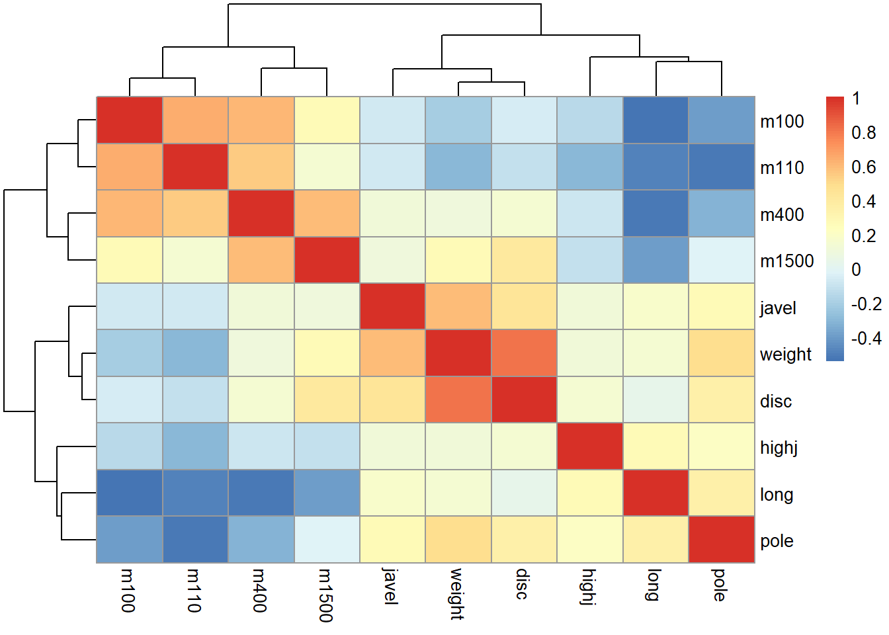
apply(turtles[,-1], 2, sd)## length width height
## 20.481602 12.675838 8.392837apply(turtles[,-1], 2, mean)## length width height
## 124.68750 95.43750 46.33333scaledTurtles = scale(turtles[, -1])
apply(scaledTurtles, 2, mean)## length width height
## -1.432050e-18 1.940383e-17 -2.870967e-16apply(scaledTurtles, 2, sd)## length width height
## 1 1 1data.frame(scaledTurtles, sex = turtles[, 1]) %>%
ggplot(aes(x = width, y = height, group = sex)) +
geom_point(aes(color = sex)) + coord_fixed()
9.3 Reducción de dimensiones
x1=1;x2=3;y1=1;y2=2;ax=2.5;ay=3;
df=data.frame(x=c(x1,x2,ax),y=c(y1,y2,ay))
ggplot(df,aes(x=x,y=y))+ geom_point(size=2) +
geom_abline(intercept=0.5,slope=0.5, color="red", size=1.3) + xlim(c(0,4)) + ylim(c(0,4))+
geom_segment(x=x1,y=y1,xend=x2-0.5,yend=y2-0.25,arrow=arrow(length = unit(0.3,"cm")),color="blue") +
geom_segment(x=ax,y=ay,xend=x2,yend=y2,arrow=arrow(length = unit(0.3,"cm")),color="orange",
linetype = 5, size = 1.2, alpha = 0.5) + annotate("text", x = ax+0.2, y = ay+0.15, label = "A", size=6) +
annotate("text", x = x2, y = y2-0.5, label = "proj_v(A)", size=6) +
annotate("text", x = x1+0.75, y = y1+0.24, label = "v", size=6, color="blue") +
annotate("text", x = x1-0.2, y = y1+ 0.2, label = "O", size=6) +
coord_fixed() + theme_void() + geom_point(size=2)
9.3.1 Proyecciones de menor dimensión
athletes = data.frame(scale(athletes))
ath_gg = ggplot(athletes, aes(x = weight, y = disc)) +
geom_point(size = 2, shape = 21)
ath_gg + geom_point(aes(y = 0), colour = "red") +
geom_segment(aes(xend = weight, yend = 0), linetype = "dashed")9.3.2 ¿Cómo resumimos los datos bidimensionales en una línea?
9.3.2.1 Regresión de una variable sobre la otra
Si ha visto regresión lineal, ya sabe cómo calcular líneas que resumen diagramas de dispersión; La regresión lineal es un supervisado que da preferencia minimizando la suma residual de cuadrados en una dirección: la de la variable respuesta.
Regresión de la variable disco sobre el peso
reg1 = lm(disc ~ weight, data = athletes)
a1 = reg1$coefficients[1] # intercept
b1 = reg1$coefficients[2] # slope
pline1 = ath_gg + geom_abline(intercept = a1, slope = b1,
col = "blue", lwd = 1.5)
pline1 + geom_segment(aes(xend = weight, yend = reg1$fitted),
colour = "red", arrow = arrow(length = unit(0.15, "cm")))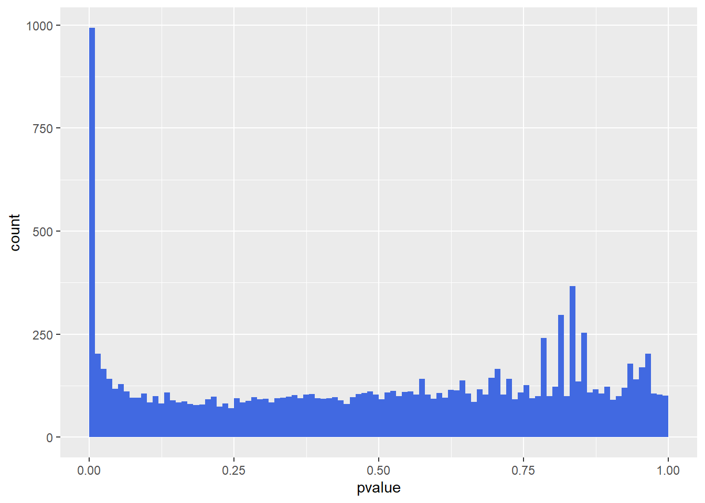
Regresión del peso sobre el disco
reg2 = lm(weight ~ disc, data = athletes)
a2 = reg2$coefficients[1] # intercept
b2 = reg2$coefficients[2] # slope
pline2 = ath_gg + geom_abline(intercept = -a2/b2, slope = 1/b2,
col = "darkgreen", lwd = 1.5)
pline2 + geom_segment(aes(xend=reg2$fitted, yend=disc),
colour = "orange", arrow = arrow(length = unit(0.15, "cm")))
var(athletes$weight) + var(reg1$fitted)## [1] 1.650204Una línea que minimiza las distancias en ambas direcciones
xy = cbind(athletes$disc, athletes$weight)
svda = svd(xy)
pc = xy %*% svda$v[, 1] %*% t(svda$v[, 1])
bp = svda$v[2, 1] / svda$v[1, 1]
ap = mean(pc[, 2]) - bp * mean(pc[, 1])
ath_gg + geom_segment(xend = pc[, 1], yend = pc[, 2]) +
geom_abline(intercept = ap, slope = bp, col = "purple", lwd = 1.5)
pline1 + geom_segment(aes(xend = weight, yend = reg1$fitted), colour = "blue", alpha = 0.35) +
geom_abline(intercept = -a2/b2, slope = 1/b2, col = "darkgreen", lwd = 1.5, alpha = 0.8) +
geom_segment(aes(xend = reg2$fitted, yend = disc), colour = "orange", alpha = 0.35) +
geom_abline(intercept = ap, slope = bp, col = "purple", lwd = 1.5, alpha = 0.8) +
geom_segment(xend = pc[, 1], yend = pc[, 2], colour = "purple", alpha = 0.35) + coord_fixed()
apply(pc, 2, var)## [1] 0.9031761 0.9031761sum(apply(pc, 2, var))## [1] 1.8063529.4 El funcionamiento interno de PCA: reducción de rango
9.4.1 Matrices de rango uno
.savedopt = options(digits = 3)
X = matrix(c(780, 75, 540,
936, 90, 648,
1300, 125, 900,
728, 70, 504), nrow = 3)
u = c(0.8196, 0.0788, 0.5674)
v = c(0.4053, 0.4863, 0.6754, 0.3782)
s1 = 2348.2
sum(u^2)## [1] 1sum(v^2)## [1] 1s1 * u %*% t(v)## [,1] [,2] [,3] [,4]
## [1,] 780 936 1300 728
## [2,] 75 90 125 70
## [3,] 540 648 900 504X - s1 * u %*% t(v)## [,1] [,2] [,3] [,4]
## [1,] -0.03419 0.0745 0.1355 0.1221
## [2,] 0.00403 0.0159 0.0252 0.0186
## [3,] -0.00903 0.0691 0.1182 0.0982options(.savedopt)svd(X)$u[, 1]## [1] 0.81963482 0.07881104 0.56743949svd(X)$v[, 1]## [1] 0.4052574 0.4863089 0.6754290 0.3782403sum(svd(X)$u[, 1]^2)## [1] 1sum(svd(X)$v[, 1]^2)## [1] 1svd(X)$d## [1] 2.348244e+03 2.141733e-13 6.912584e-159.4.2 ¿Cómo encontramos tal descomposición de una manera única?
Xtwo = matrix(c(12.5, 35.0, 25.0, 25, 9, 14, 26, 18, 16, 21, 49, 32,
18, 28, 52, 36, 18, 10.5, 64.5, 36), ncol = 4, byrow = TRUE)
USV = svd(Xtwo)names(USV)## [1] "d" "u" "v"USV$d## [1] 1.350624e+02 2.805191e+01 3.103005e-15 1.849559e-15Xtwo - USV$d[1] * USV$u[, 1] %*% t(USV$v[, 1])## [,1] [,2] [,3] [,4]
## [1,] 0.87481760 19.045230 -10.1044650 1.74963521
## [2,] 0.08079747 1.759002 -0.9332405 0.16159494
## [3,] -0.04700978 -1.023427 0.5429803 -0.09401956
## [4,] 0.16159494 3.518005 -1.8664809 0.32318987
## [5,] -0.69632883 -15.159437 8.0428540 -1.39265765Xtwo - USV$d[1] * USV$u[, 1] %*% t(USV$v[, 1]) -
USV$d[2] * USV$u[, 2] %*% t(USV$v[, 2])## [,1] [,2] [,3] [,4]
## [1,] 7.216450e-15 -1.065814e-14 8.881784e-15 4.884981e-15
## [2,] 2.040035e-15 -5.995204e-15 1.054712e-14 3.219647e-15
## [3,] 2.865763e-15 -9.547918e-15 1.554312e-15 6.231127e-15
## [4,] 4.385381e-15 -5.773160e-15 1.776357e-14 7.049916e-15
## [5,] 5.107026e-15 -1.776357e-15 1.776357e-14 1.776357e-14stopifnot(max(abs(
Xtwo - USV$d[1] * USV$u[, 1] %*% t(USV$v[, 1]) -
USV$d[2] * USV$u[, 2] %*% t(USV$v[, 2]))) < 1e-12,
max(abs(USV$d[3:4])) < 1e-13)Compruebe la ortonormalidad calculando el producto cruz de la U y V matrices:
t(USV$u) %*% USV$u## [,1] [,2] [,3] [,4]
## [1,] 1.000000e+00 -1.665335e-16 0.000000e+00 -8.326673e-17
## [2,] -1.665335e-16 1.000000e+00 1.665335e-16 -5.551115e-17
## [3,] 0.000000e+00 1.665335e-16 1.000000e+00 -5.551115e-17
## [4,] -8.326673e-17 -5.551115e-17 -5.551115e-17 1.000000e+00t(USV$v) %*% USV$v## [,1] [,2] [,3] [,4]
## [1,] 1.000000e+00 8.326673e-17 1.387779e-17 -5.551115e-17
## [2,] 8.326673e-17 1.000000e+00 -3.642919e-17 -6.938894e-17
## [3,] 1.387779e-17 -3.642919e-17 1.000000e+00 2.775558e-17
## [4,] -5.551115e-17 -6.938894e-17 2.775558e-17 1.000000e+00Se usará la reescalada matriz turtles a una descomposición de valor singular.
turtles.svd = svd(scaledTurtles)
turtles.svd$d## [1] 11.746475 1.419035 1.003329turtles.svd$v## [,1] [,2] [,3]
## [1,] 0.5787981 -0.3250273 -0.74789704
## [2,] 0.5779840 -0.4834699 0.65741263
## [3,] 0.5752628 0.8127817 0.09197088dim(turtles.svd$u)## [1] 48 3sum(turtles.svd$v[,1]^2)## [1] 1sum(turtles.svd$d^2) / 47## [1] 3US = turtles.svd$u[,1, drop = FALSE] %*% turtles.svd$d[1]
XV = scaledTurtles %*% turtles.svd$v[, 1, drop = FALSE]
max(abs(US-XV))## [1] 6.661338e-16stopifnot(max(abs(US-XV)) < 1e-9)svda$v[,1]## [1] -0.7071068 -0.70710689.5 Trazado de las observaciones en el plano principal
¿Qué parte de la salida de las svd nos lleva a los primeros coeficientes de PC, también conocidos como cargas ?
ppdf = tibble(PC1n = -svda$u[, 1] * svda$d[1],
PC2n = svda$u[, 2] * svda$d[2])
gg = ggplot(ppdf, aes(x = PC1n, y = PC2n)) +
geom_point() +
geom_hline(yintercept = 0, color = "purple", lwd = 1.5, alpha = 0.5) +
xlab("PC1 ")+ ylab("PC2") + xlim(-3.5, 2.7) + ylim(-2, 2) + coord_fixed()
gg + geom_point(aes(x = PC1n, y = 0), color = "red") +
geom_segment(aes(xend = PC1n, yend = 0), color = "red") 
gg + geom_point(aes(x = 0, y = PC2n), color = "blue") +
geom_segment(aes(yend = PC2n, xend = 0), color = "blue") +
geom_vline(xintercept = 0, color = "skyblue", lwd = 1.5, alpha = 0.5) sum(ppdf$PC2n^2) ## [1] 6.196729svda$d[2]^2## [1] 6.196729mean(ppdf$PC2n) ## [1] 5.426218e-16var(ppdf$PC2n) * (nrow(ppdf)-1)## [1] 6.196729var(ppdf$PC1n) ## [1] 1.806352var(ppdf$PC2n) ## [1] 0.1936478sd(ppdf$PC1n) / sd(ppdf$PC2n)## [1] 3.054182svda$d[1] / svda$d[2]## [1] 3.054182stopifnot(sd(ppdf$PC1n) / sd(ppdf$PC2n) - svda$d[1] / svda$d[2] < 1e-9)9.5.1 PCA de los datos de las tortugas
Ahora queremos hacer un análisis PCA completo de los datos de las tortugas. Recuerde, ya vimos las estadísticas de resumen para los datos de 1 y 2 dimensiones. Ahora vamos a responder a la pregunta sobre la dimensionalidad “verdadera” de estos datos reescalados. En el siguiente código, usamos la función princomp. Su valor de retorno es una lista de toda la información importante necesaria para trazar e interpretar un PCA.
cor(scaledTurtles)## length width height
## length 1.0000000 0.9783116 0.9646946
## width 0.9783116 1.0000000 0.9605705
## height 0.9646946 0.9605705 1.0000000pcaturtles = princomp(scaledTurtles)
pcaturtles## Call:
## princomp(x = scaledTurtles)
##
## Standard deviations:
## Comp.1 Comp.2 Comp.3
## 1.6954576 0.2048201 0.1448180
##
## 3 variables and 48 observations.library("factoextra")## Warning: package 'factoextra' was built under R version 4.1.3## Welcome! Want to learn more? See two factoextra-related books at https://goo.gl/ve3WBafviz_eig(pcaturtles, geom = "bar", bar_width = 0.4) + ggtitle("")
svd(scaledTurtles)$v[, 1]## [1] 0.5787981 0.5779840 0.5752628prcomp(turtles[, -1])$rotation[, 1]## length width height
## 0.8068646 0.4947448 0.3227958princomp(scaledTurtles)$loadings[, 1]## length width height
## 0.5787981 0.5779840 0.5752628dudi.pca(turtles[, -1], nf = 2, scannf = FALSE)$c1[, 1]## [1] -0.5787981 -0.5779840 -0.5752628res = princomp(scaledTurtles)
PC1 = scaledTurtles %*% res$loadings[,1]
sd1 = sqrt(mean(res$scores[, 1]^2))Ahora vamos a combinar ambas puntuaciones de PC
fviz_pca_biplot(pcaturtles, label = "var", habillage = turtles[, 1]) +
ggtitle("")
pcadudit = dudi.pca(scaledTurtles, nf = 2, scannf = FALSE)
apply(pcadudit$li, 2, function(x) sum(x^2)/48)## Axis1 Axis2
## 2.93573765 0.04284387pcadudit$eig## [1] 2.93573765 0.04284387 0.02141848Ahora observamos las relaciones entre las variables, tanto las antiguas como las nuevas, dibujando lo que se conoce como el círculo de correlación. La relación de aspecto es 1 aquí y las variables están representadas por flechas como se muestra.
fviz_pca_var(pcaturtles, col.circle = "black") + ggtitle("") +
xlim(c(-1.2, 1.2)) + ylim(c(-1.2, 1.2))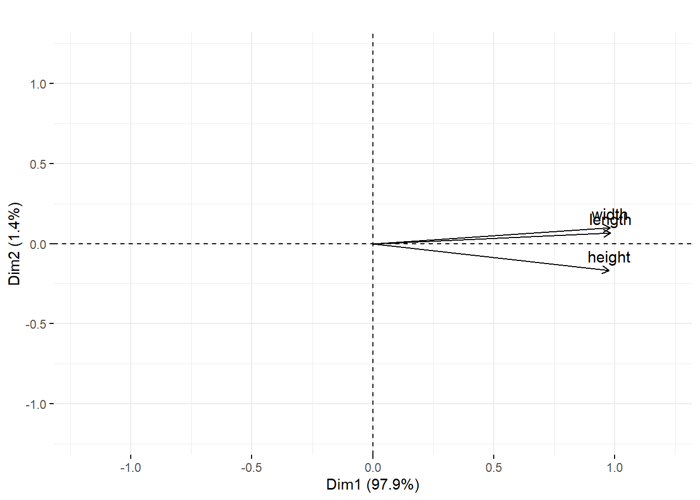
Explique las relaciones entre el número de filas de nuestra matriz de datos de tortugas y los siguientes números:
svd(scaledTurtles)$d/pcaturtles$sdev## Comp.1 Comp.2 Comp.3
## 6.928203 6.928203 6.928203sqrt(47)## [1] 6.8556559.5.2 Un análisis completo: los atletas de decatlón
cor(athletes) %>% round(1)## m100 long weight highj m400 m110 disc pole javel m1500
## m100 1.0 -0.5 -0.2 -0.1 0.6 0.6 0.0 -0.4 -0.1 0.3
## long -0.5 1.0 0.1 0.3 -0.5 -0.5 0.0 0.3 0.2 -0.4
## weight -0.2 0.1 1.0 0.1 0.1 -0.3 0.8 0.5 0.6 0.3
## highj -0.1 0.3 0.1 1.0 -0.1 -0.3 0.1 0.2 0.1 -0.1
## m400 0.6 -0.5 0.1 -0.1 1.0 0.5 0.1 -0.3 0.1 0.6
## m110 0.6 -0.5 -0.3 -0.3 0.5 1.0 -0.1 -0.5 -0.1 0.1
## disc 0.0 0.0 0.8 0.1 0.1 -0.1 1.0 0.3 0.4 0.4
## pole -0.4 0.3 0.5 0.2 -0.3 -0.5 0.3 1.0 0.3 0.0
## javel -0.1 0.2 0.6 0.1 0.1 -0.1 0.4 0.3 1.0 0.1
## m1500 0.3 -0.4 0.3 -0.1 0.6 0.1 0.4 0.0 0.1 1.0pca.ath = dudi.pca(athletes, scannf = FALSE)
pca.ath$eig## [1] 3.4182381 2.6063931 0.9432964 0.8780212 0.5566267 0.4912275 0.4305952
## [8] 0.3067981 0.2669494 0.1018542fviz_eig(pca.ath, geom = "bar", bar_width = 0.3) + ggtitle("")fviz_pca_var(pca.ath, col.circle = "black") + ggtitle("")athletes[, c(1, 5, 6, 10)] = -athletes[, c(1, 5, 6, 10)]
cor(athletes) %>% round(1)## m100 long weight highj m400 m110 disc pole javel m1500
## m100 1.0 0.5 0.2 0.1 0.6 0.6 0.0 0.4 0.1 0.3
## long 0.5 1.0 0.1 0.3 0.5 0.5 0.0 0.3 0.2 0.4
## weight 0.2 0.1 1.0 0.1 -0.1 0.3 0.8 0.5 0.6 -0.3
## highj 0.1 0.3 0.1 1.0 0.1 0.3 0.1 0.2 0.1 0.1
## m400 0.6 0.5 -0.1 0.1 1.0 0.5 -0.1 0.3 -0.1 0.6
## m110 0.6 0.5 0.3 0.3 0.5 1.0 0.1 0.5 0.1 0.1
## disc 0.0 0.0 0.8 0.1 -0.1 0.1 1.0 0.3 0.4 -0.4
## pole 0.4 0.3 0.5 0.2 0.3 0.5 0.3 1.0 0.3 0.0
## javel 0.1 0.2 0.6 0.1 -0.1 0.1 0.4 0.3 1.0 -0.1
## m1500 0.3 0.4 -0.3 0.1 0.6 0.1 -0.4 0.0 -0.1 1.0pcan.ath = dudi.pca(athletes, nf = 2, scannf = FALSE)
pcan.ath$eig## [1] 3.4182381 2.6063931 0.9432964 0.8780212 0.5566267 0.4912275 0.4305952
## [8] 0.3067981 0.2669494 0.1018542Círculo de correlación de las variables originales.
fviz_pca_var(pcan.ath, col.circle="black") + ggtitle("")fviz_pca_ind(pcan.ath) + ggtitle("") + ylim(c(-2.5,5.7))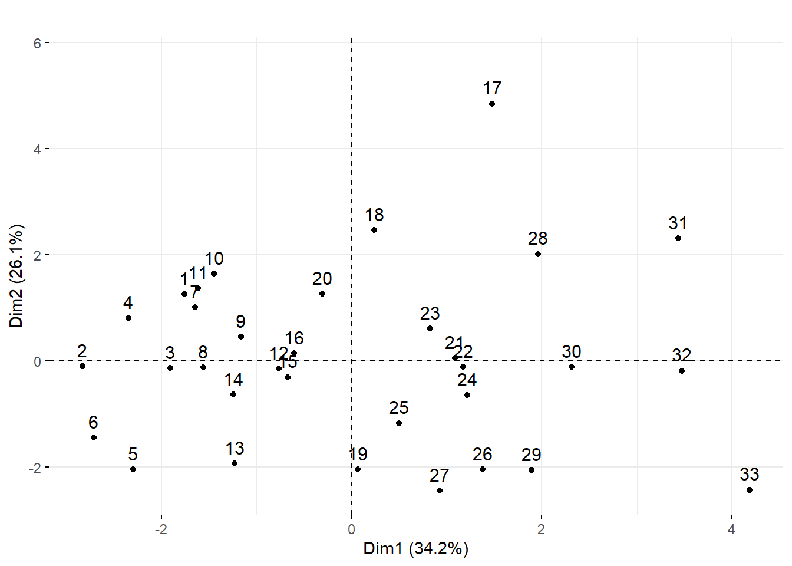
Si observamos a los propios atletas tal como se muestran, notamos un ligero efecto de ordenación. ¿Ves una relación entre la calidad de los atletas y su número?
data("olympic", package = "ade4")
olympic$score## [1] 8488 8399 8328 8306 8286 8272 8216 8189 8180 8167 8143 8114 8093 8083 8036
## [16] 8021 7869 7860 7859 7781 7753 7745 7743 7623 7579 7517 7505 7422 7310 7237
## [31] 7231 7016 6907Ahora se hace el diagrama de dispersión comparando la puntuación del primer componente principal de los atletas con esta puntuación de los datos, se puede ver una fuerte correlación entre las dos variables.
p = ggplot(tibble(pc1 = pcan.ath$li[, 1], score = olympic$score, id = rownames(athletes)),
aes(x = score, y = pc1, label = id)) + geom_text()
p + stat_smooth(method = "lm", se = FALSE)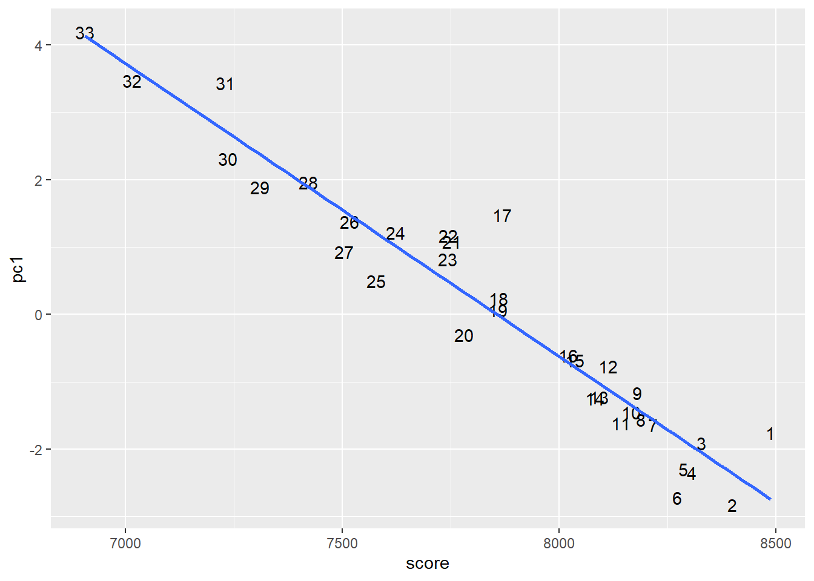
9.5.3 Cómo elegir k , el número de dimensiones ?
load("../data/screep7.RData")
pcaS7 = dudi.pca(screep7, scannf = FALSE)
fviz_eig(pcaS7,geom="bar",bar_width=0.5) + ggtitle("")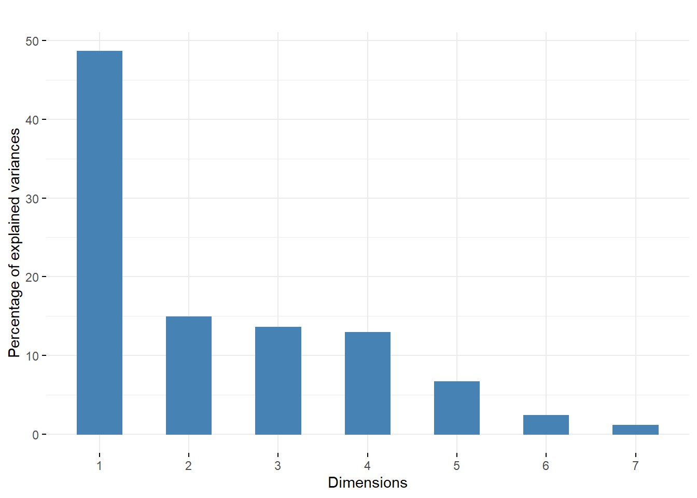
fviz_eig(pcaS7,geom="bar",width=0.3)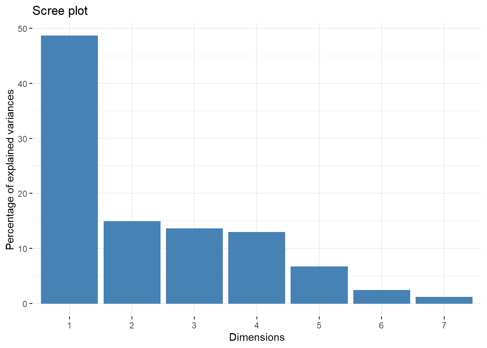
p7=prcomp(screep7,scale= TRUE)
p7$sdev^2## [1] 3.40593761 1.04022404 0.94772691 0.90206914 0.46357752 0.16585209 0.07461269plot(p7)9.6 PCA como herramienta exploratoria: uso de información adicional.
pcaMsig3 = dudi.pca(Msig3transp, center = TRUE, scale = TRUE,
scannf = FALSE, nf = 4)
fviz_screeplot(pcaMsig3) + ggtitle("")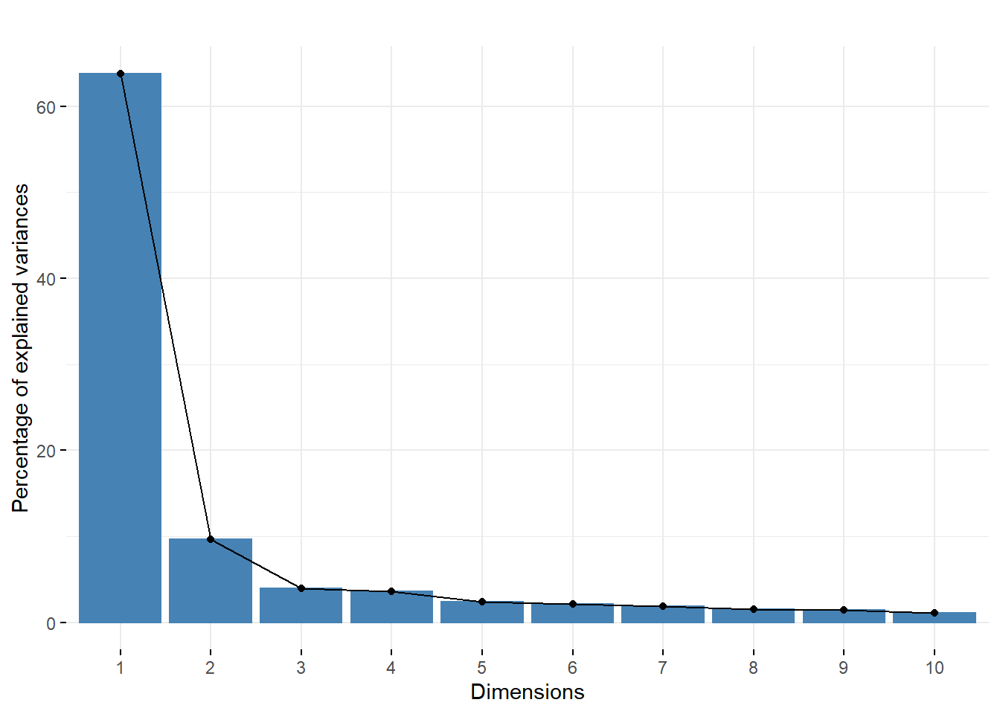
A continuación, tenemos que enfrentar el último escenario, y usamos substrgimnasia para extraer los tipos de células y mostrar el screeplot.
ids = rownames(Msig3transp)
celltypes = factor(substr(ids, 7, 9))
status = factor(substr(ids, 1, 3))
table(celltypes)## celltypes
## EFF MEM NAI
## 10 9 11cbind(pcaMsig3$li, tibble(Cluster = celltypes, sample = ids)) %>%
ggplot(aes(x = Axis1, y = Axis2)) +
geom_point(aes(color = Cluster), size = 5) +
geom_hline(yintercept = 0, linetype = 2) +
geom_vline(xintercept = 0, linetype = 2) +
scale_color_discrete(name = "Cluster") + coord_fixed()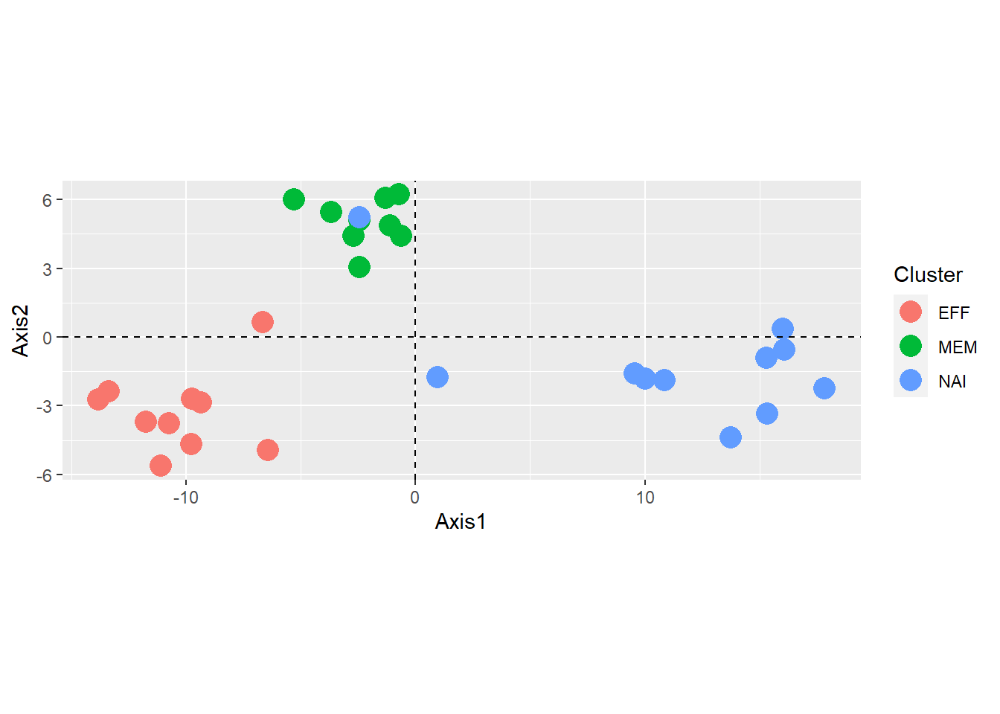
PCA de la expresión génica para un subconjunto de 156 genes involucrados en las especificidades de cada uno de los tres tipos de células T independientes: efectoras, ingenuas y de memoria.
p_load("xcms", "faahKO")
cdfpath = system.file("cdf", package = "faahKO")
cdffiles = list.files(cdfpath, recursive = TRUE, full = TRUE)
xset = xcmsSet(cdffiles)
xset2 = group(xset)
xset2 = retcor(xset2)
xset2 = group(xset2, bw = 10)
xset3 = fillPeaks(xset2)
gt = groups(xset3)
mat1 = groupval(xset3, value = "into")9.6.1 Análisis de datos de espectroscopia de masas
load("../data/mat1xcms.RData")
dim(mat1)## [1] 399 12pcamat1 = dudi.pca(t(mat1), scannf = FALSE, nf = 3)
fviz_eig(pcamat1, geom = "bar", bar_width = 0.7) + ggtitle("")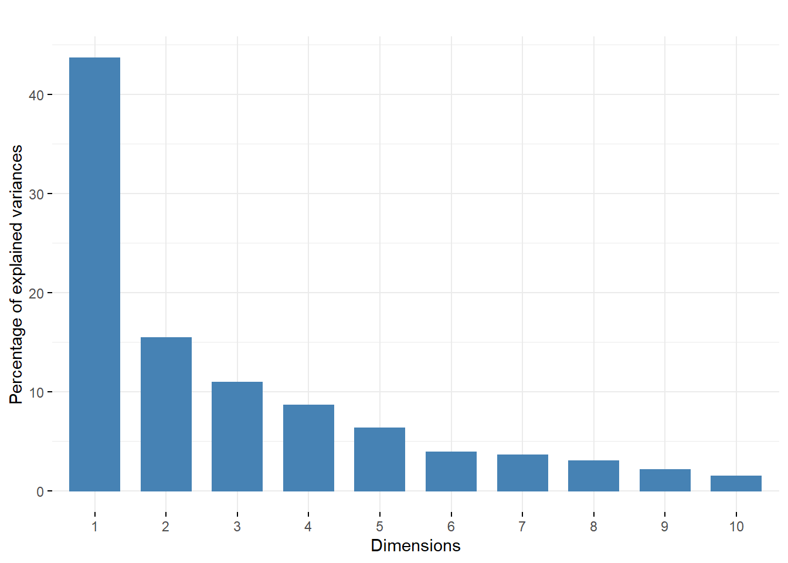
dfmat1 = cbind(pcamat1$li, tibble(
label = rownames(pcamat1$li),
number = substr(label, 3, 4),
type = factor(substr(label, 1, 2))))
pcsplot = ggplot(dfmat1,
aes(x=Axis1, y=Axis2, label=label, group=number, colour=type)) +
geom_text(size = 4, vjust = -0.5)+ geom_point(size = 3)+ylim(c(-18,19))
pcsplot + geom_hline(yintercept = 0, linetype = 2) +
geom_vline(xintercept = 0, linetype = 2)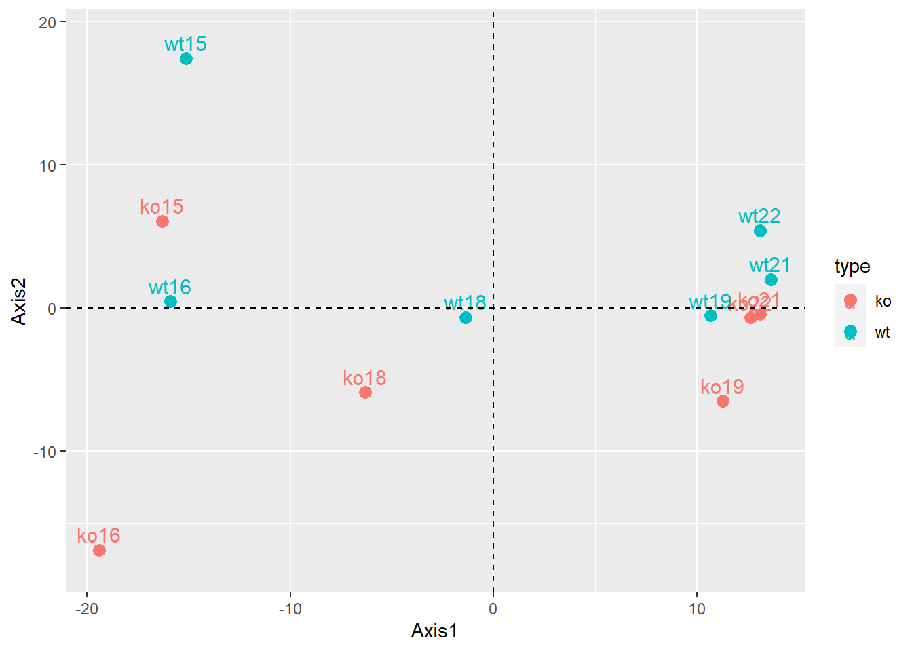 El primer plano principal para el mat1datos. Explica el 59% de la varianza.
pcsplot + geom_line(colour = "red")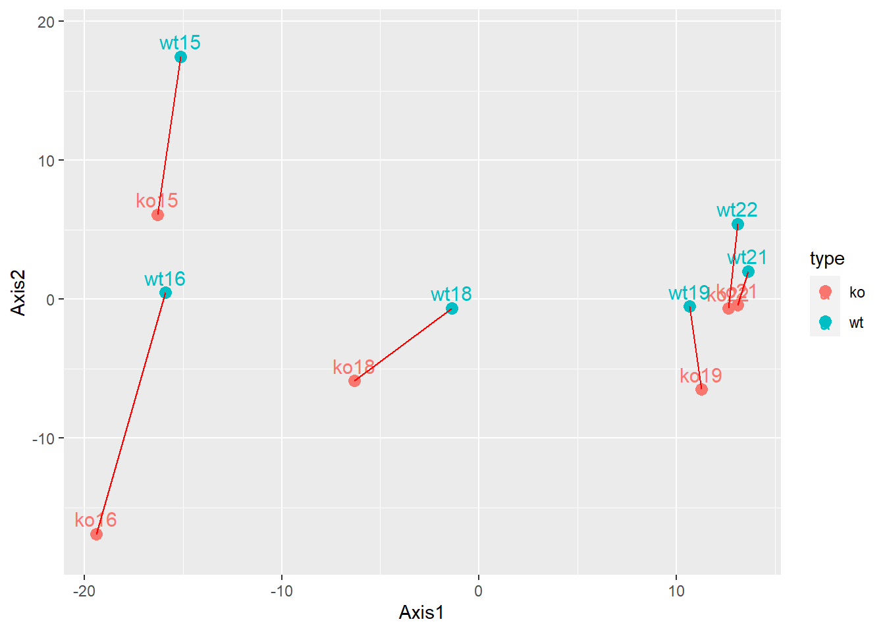
9.6.2 Biplots y escalado
p_load("pheatmap")
load("../data/wine.RData")
load("../data/wineClass.RData")
wine[1:2, 1:7]## Alcohol MalicAcid Ash AlcAsh Mg Phenols Flav
## 1 14.23 1.71 2.43 15.6 127 2.80 3.06
## 2 13.20 1.78 2.14 11.2 100 2.65 2.76pheatmap(1 - cor(wine), treeheight_row = 0.2)
winePCAd = dudi.pca(wine, scannf=FALSE)
table(wine.class)## wine.class
## barolo grignolino barbera
## 59 71 48fviz_pca_biplot(winePCAd, geom = "point", habillage = wine.class,
col.var = "violet", addEllipses = TRUE, ellipse.level = 0.69) +
ggtitle("") + coord_fixed()Un biplot es una representación simultánea tanto del espacio de observaciones como del espacio de variables.
9.6.3 Un ejemplo de PCA ponderado
data("x", package = "Hiiragi2013")
xwt = x[, x$genotype == "WT"]
sel = order(rowVars(Biobase::exprs(xwt)), decreasing = TRUE)[1:100]
xwt = xwt[sel, ]
tab = table(xwt$sampleGroup)
tab##
## E3.25 E3.5 (EPI) E3.5 (PE) E4.5 (EPI) E4.5 (PE)
## 36 11 11 4 4Screeplot del PCA ponderado de los datos de Hiiragi. La caída después del segundo valor propio sugiere que un PCA bidimensional es apropiado.
xwt$weight = 1 / as.numeric(tab[xwt$sampleGroup])
pcaMouse = dudi.pca(as.data.frame(t(Biobase::exprs(xwt))),
row.w = xwt$weight,
center = TRUE, scale = TRUE, nf = 2, scannf = FALSE)
fviz_eig(pcaMouse) + ggtitle("")Salida de PCA ponderada en los datos de Hiiragi. Las muestras están coloreadas según sus grupos.
fviz_pca_ind(pcaMouse, geom = "point", col.ind = xwt$sampleGroup) +
ggtitle("") + coord_fixed()9.7 Resumen de este capítulo
Matrices de preprocesamiento Los análisis de datos multivariados requieren un preprocesamiento “consciente”. Después de consultar todas las medias, varianzas e histogramas unidimensionales, vimos cómo reescalar y volver a centrar los datos.
Proyectar sobre nuevas variables Vimos cómo podemos hacer proyecciones en dimensiones más bajas (planos y 3D son las más utilizadas) de datos de dimensiones muy altas sin perder demasiada información. PCA busca nuevos more informativevariables que son combinaciones lineales de las originales (antiguas).
Descomposición de matriz PCA se basa en encontrar descomposiciones de la matriz X llamada SVD, esta descomposición proporciona una aproximación de rango inferior y es equivalente al análisis propio de X t X . Los cuadrados de los valores singulares son iguales a los valores propios ya las varianzas de las nuevas variables. Trazamos sistemáticamente estos valores antes de decidir cuántos ejes son necesarios para reproducir la señal en los datos.
Representaciones biplot El espacio de observaciones es naturalmente un espacio p-dimensional (las p variables originales proporcionan las coordenadas). El espacio de variables es n-dimensional. Ambas descomposiciones que hemos estudiado (valores singulares/valores propios y vectores singulares/vectores propios) proporcionan nuevas coordenadas para estos dos espacios, a veces llamamos a uno el dual del otro. Podemos trazar la proyección tanto de las observaciones como de las variables en los mismos vectores propios. Esto proporciona un biplot que puede ser útil para interpretar la salida de PCA.
Proyección de otras variables de grupo La interpretación de PCA también puede verse facilitada por datos redundantes o contiguos sobre las observaciones.
9.8 Ejercicios
Cree una primera matriz a de datos bivariados altamente correlacionados.
mu1 = 1; mu2 = 2; s1=2.5; s2=0.8; rho=0.9;
sigma = matrix(c(s1^2, s1*s2*rho, s1*s2*rho, s2^2),2)
p_load("MASS")
sim2d = data.frame(mvrnorm(50, mu = c(mu1,mu2), Sigma = sigma))
svd(scale(sim2d))$d## [1] 9.729295 1.827788svd(scale(sim2d))$v[,1]## [1] -0.7071068 -0.7071068ggplot(data.frame(sim2d),aes(x=X1,y=X2)) +
geom_point()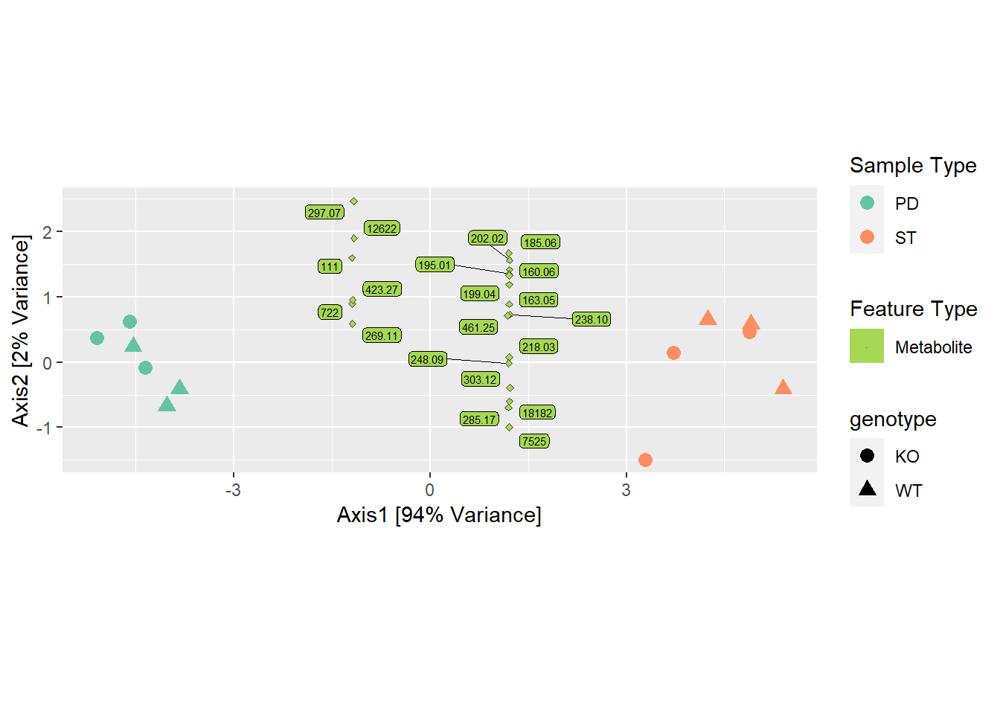
respc=princomp(sim2d)
dfpc = data.frame(pc1=respc$scores[,1],
pc2 = respc$scores[,2])
ggplot(dfpc,aes(x=pc1,y=pc2)) +
geom_point() + coord_fixed(2)
Los datos originales que se muestran en el diagrama de dispersión (A) y el gráfico obtenido usando la rotación de componentes principales (B).